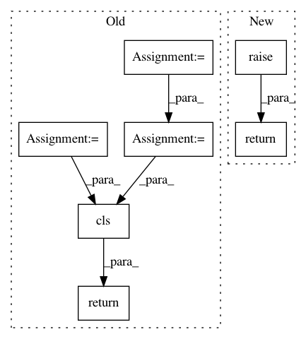

7f2b5c41126bea4704e279deea0068f0462d5b49,python/baseline/services.py,LanguageModelService,load,#Any#Any#,245
Before Change
// can delegate
if os.path.isdir(bundle):
directory = bundle
else:
directory = unzip_files(bundle)
kwargs["batchsz"] = 1
vocabs = load_vocabs(directory)
vectorizers = load_vectorizers(directory)
model_basename = find_model_basename(directory)
be = kwargs.get("backend", "tf")
import_user_module("baseline.{}.embeddings".format(be))
import_user_module("baseline.{}.lm".format(be))
model = load_lang_model(model_basename, **kwargs)
return cls(vocabs, vectorizers, model)
// Do a greedy decode for now, everything else will be super slow
def predict(self, tokens, **kwargs):
mxlen = kwargs.get("mxlen", 10)
After Change
@classmethod
def load(cls, bundle, **kwargs):
kwargs["batchsz"] = 1
return super(LanguageModelService, cls).load(bundle, **kwargs)
// Do a greedy decode for now, everything else will be super slow
def predict(self, tokens, **kwargs):
mxlen = kwargs.get("mxlen", 10)
In pattern: SUPERPATTERN
Frequency: 3
Non-data size: 7
Instances
Project Name: dpressel/mead-baseline
Commit Name: 7f2b5c41126bea4704e279deea0068f0462d5b49
Time: 2018-10-25
Author: blester125@users.noreply.github.com
File Name: python/baseline/services.py
Class Name: LanguageModelService
Method Name: load
Project Name: pytorch/text
Commit Name: 247598d255f926b6adfada1cbfde909ca3d801ba
Time: 2017-10-15
Author: jekbradbury@gmail.com
File Name: torchtext/datasets/trec.py
Class Name: TREC
Method Name: splits
Project Name: pytorch/text
Commit Name: 247598d255f926b6adfada1cbfde909ca3d801ba
Time: 2017-10-15
Author: jekbradbury@gmail.com
File Name: torchtext/datasets/imdb.py
Class Name: IMDB
Method Name: splits